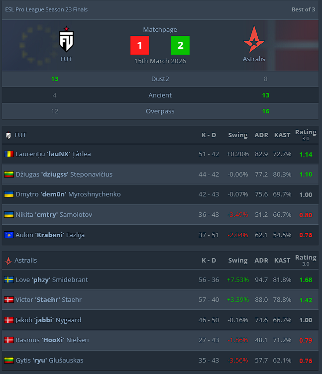

FUT fell off late in the game as Astralis mounted a comeback to win it flawlessly in the decider map overtime.
Astralis, ninth in the VRS ranking, beat FUT, tenth in the VRS, in the ESL Pro League Season 23 Finals third-place decider to stay ahead in a quickly developing rivalry.
Astralis and FUT have played each other five times this year, with the Rasmus "HooXi" Nielsen-led squad taking the head-to-head lead, 3-2, after their latest victory.
The two teams played each other in Stage 1 and Stage 2 of EPL, trading 2-0 series, but this third series went all the way to a decider. Not only that, it went to the decider's overtime, where Astralis came alive to win it flawlessly.
The series kicked off on Dust2, where FUT were firmly in control on the attack. Laurențiu "lauNX" Țârlea led the way to a 9-3 half with 15 kills, a 2.10 rating and +9.86% round swing.
lauNX downed three in the second pistol round for FUT to hit double digits, but Love "phzy" Smidebrant hit back with two triples, one in the forcebuy and another with a close-range AWP on Short, and put Astralis right back in the running.
FUT's lead was shortened to just two, 10-8, after a string of five successful attacks by Astralis, but in the end the youngsters buckled down and won their pick out 13-8.
A triple by Gytis "ryu" Glušauskas in the opening pistol round of Ancient put Astralis firmly in the driver's seat on their map pick as they went on to take an early 5-1 lead. FUT didn't let it get too far away, winning three more before the half, but Astralis didn't buckle.
Astralis won the second pistol round and ran away with the map as phzy continued to be his team's talisman, posting a 2.07 rating on the map with +10.85% round swing.
FUT went into Overpass having won it the last two out of the three times these teams played it against each other, but Astralis got ahead first.
A successful B defense in the forcebuy put FUT right back in the mix, however, and it was off to the races as the two teams played out the half to a 6-6 scoreline.
The two teams stayed close together as HooXi beat Aulon "Krabeni" Fazlija in a 1v1 to keep it 9-9, but after that FUT inched closer and closer to victory, all the way to 12-9.
Four MP9 kills by Victor "Staehr" Staehr when up against the ropes kept his team in it, and a triple by Jakob "jabbi" Nygaard — who turned a 0-10 start into 19-20 at the end of regulation — followed to force overtime
FUT collapsed under the pressure and were unable to make anything happen in overtime, with Staehr winning a 1v2 in the final round of the first half to put Astralis on match point. HooXi and his men converted on their first occasion as FUT continued to crumble, ending it 16-12.
